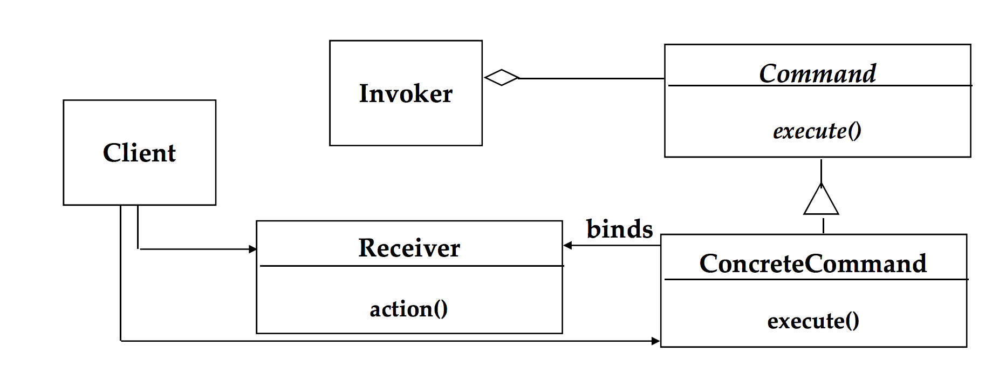

Object-oriented design
Design patterns
Command design pattern
Design patterns describe simple and elegant solutions to common problems in object-oriented software design. One common design pattern is the Command pattern. It's mostly used when you want to execute a set of behaviors on a common object.
Few terms associated with the Command pattern
- The behaviors(commands) encapsulated as objects
- The object that initiates the execution of the commands(client)
- The object that's on the receiving end of the commands(the receiver)
Few examples of command pattern

- The relationship between a remote control & a TV. We have a set of commands (Turn on, off, increase volume and so forth) that are applied on the TV(the receiver) by the remote(client).
- Apply a set of commands (save, edit, copy, paste) that are applied on some document(reciever) by pressing some icon(client).
So the goal is to create an object, the command object, that encapsulates the implementation of the desired behavior, and have the user invoke the behavior only from the command object. The encapsulation is made possible by exposing just one method 'execute()' that subsequently causes some actions to be invoked on the receiver.
The command pattern also allows the requestor of the action to be decoupled from the object that carries out this action. It's very helpful in situations where there could be a number of ways to invoke an operation. For ex, you can execute any of the above commands above on a text document by a clicking a menu, an icon or even via a keyboard shortcut.
Another usecase of the command pattern is in situations when you might want to execute a set of commands synchronously on an object. If one command fails during this process, you can choose to immediately undo the executed commands.
Let's imagine the following scenrio. If you have a microservice and one of the endpoints will create some complex object 'A'. However, in order to create that object, the following things are required:
- it has to call 5 other micro services to create parts of the object.(m1, m2, m3, m4, m5)
- Let's assume calls to m3 depend on the response from m2.
- In order to consider the whole object as created & saved, every part of the object will need to be saved by each micro service.
One of the design patterns that we can use here is the command design pattern. For this particular case, we can define a set of 5 commands, each responsible for sending a request to each microervice to save a part of the object. we have to define the order in which we want the orders to get executed. Each command behavior is acting on the object we want to build. if any of the commands fail to execute, we can undo the commands that already executed. in other words, we don't want only a few parts of the object created and saved while other parts were unsuccessful.
Commands can also be composed into Macro commands. This combines the Command pattern with the Composite pattern. More links to the composite pattern